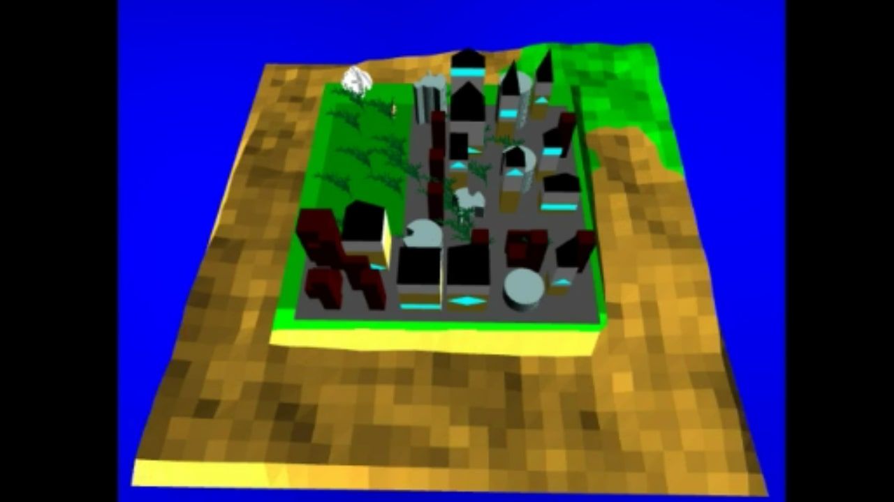

Finding Mochi
C++ OpenGLFinding Mochi is a minigame based on the movie Big Hero 6 where Baymax must navigate through the city to find the cat, Mochi. This project was the final project for UCSD's Introduction to Computer Graphics class and it was created in a team with two other students.
Link to Video Demo

Project Rubric and Directions
Technical Features Implemented:
- Toon shading
- Surface made with two C1 continuous Bezier patches
- Collision detection with bounding spheres
- Procedurally modeled buildings
- Procedurally modeled buildings
- Procedurally modeled buildings
- Procedurally modeled buildings
- Procedurally modeled city
- Procedurally generated terrain (diamond-square algorithm)
- Procedurally generated plants with L-systems
- Skybox environment
Keyboard Key Functions:
- 1: Turn the Baymax model on/off
- 2: Turn the Mochi model on/off
- 3: Turn the rendering for the bounding spheres on/off
- 4: Turn the ocean patch on/off
- 5: Turn the terrain on/off
- 6: Turn the city on/off
- 7: Turn the buildings on/off
- 8: Turn the plants on/off
- 9: Turn on/off random relocation if Baymax catches Mochi 0: Turn the testing object on/off
- C/c: Increase/Decrease the FOV (Zoom Out/Zoom In)
- o: Toggle between only rendering the ocean path and rendering all models
- p: Toggle between changing the FOV using C/c and Up/Down
- r: Change the seed value for the procedurally generated models that are on (ocean patch, terrain, city, building, plants)
- S/s: Scale the model up/down z: Toggle between changing the value of the y coordinate or the z coordinate
- Up Arrow: Increase the value of the y coordinate or decrease the value of the z coordinate
- Down Arrow: Decrease the value of the y coordinate or increase the value of the z coordinate
- Left Arrow: Decrease the value of the x coordinate for the models that are on
- Right Arrow: Increase the value of the x coordinate for the models that are on
- F1: Go to ground view
- F2: Go to bird's eye view
Mouse Functionality:
- Hold the left mouse button and move the cursor to rotate the camera around the center of the world.